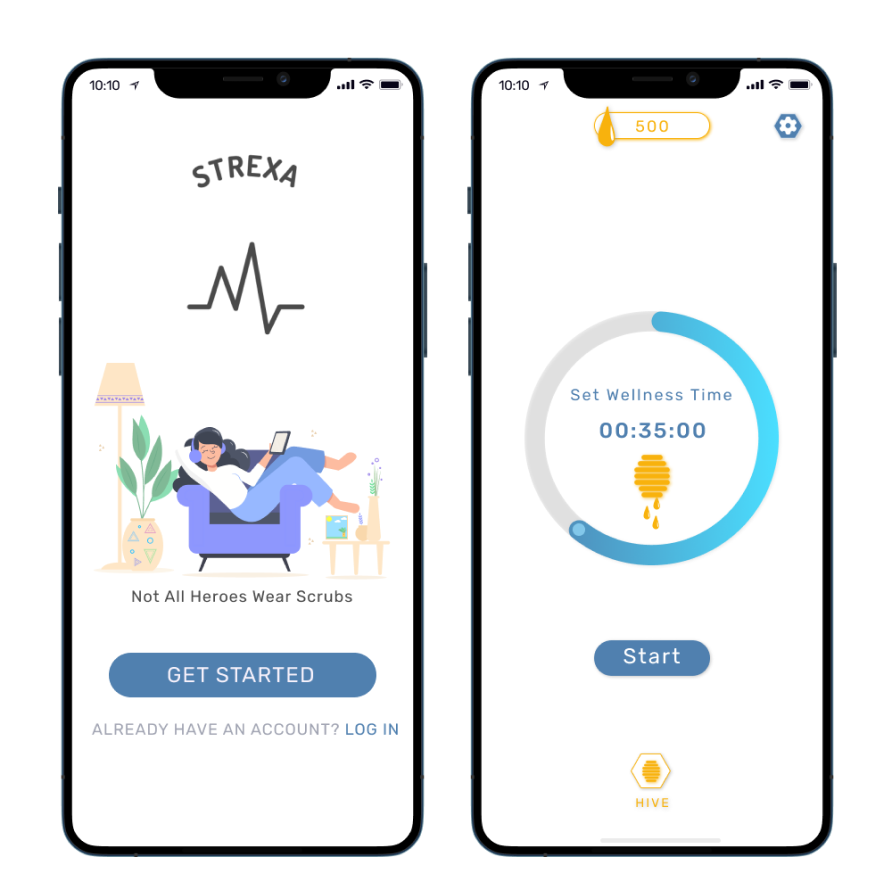
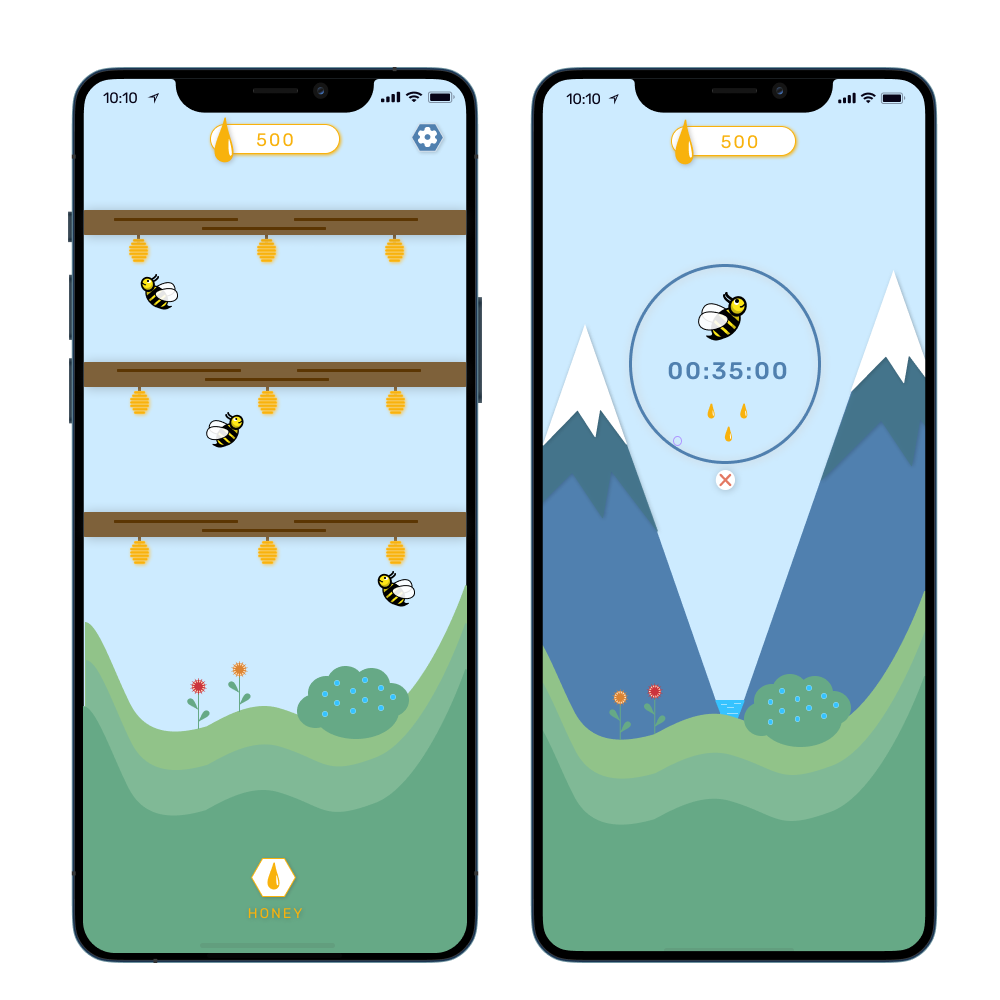
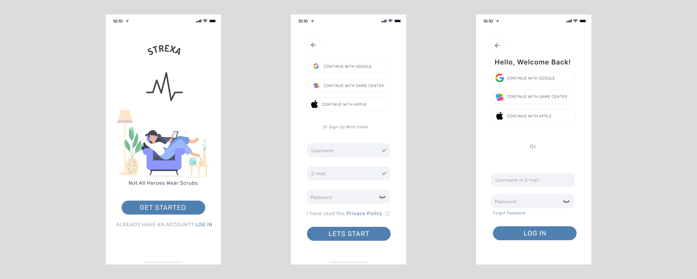
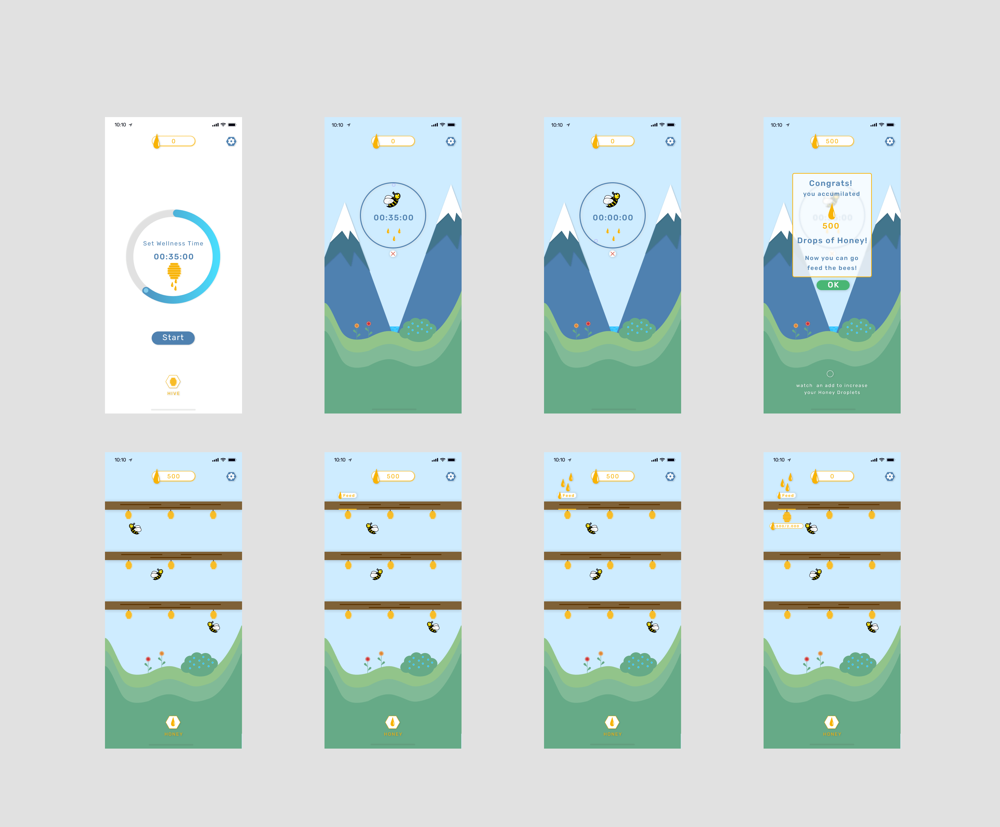

A gamified Mental Health Relaxation app
Mobile App Prototype
Introducing Strexa : A mobile app designed to help users relax and meditate, particularly those in the healthcare field. Strexa gamifies meditation by rewarding users with honey droplets for completing sessions, which can be used to feed their bee hives. The app aims to provide a calming and enjoyable experience, making meditation accessible and engaging for everyone.
Objective : Creating an app to help elivate stress for users by making meditation in a form of a game.
Challenge : Creating an app that helps users alleviate stress involves several challenges: understanding diverse user needs, ensuring accessibility, designing an intuitive and calming interface, and integrating effective gamification without causing distraction. It also requires balancing engagement with relaxation, protecting user privacy, and providing evidence-based techniques that genuinely support mental well-being.
Solution : Provided users a friendly game that lets people meditate and feed beehives.People are able set a timer, meditate, by being off your phone and accumilate honey droplets. Once you have obtained your honey you can feed the beehives.

Mental health is a significant concern for many individuals, particularly those in healthcare, who face challenges most of us may never encounter in our lifetimes. My solution aims to offer an experience that supports mental health. With Strexa, I strive to bring enjoyment and relaxation to everyone. By gamifying meditation, we can help people ease their minds and find relaxation when they get the chance.
My vision for Strexa is to gamify meditation and reward users for completing sessions. With Strexa, you set a timer and
stay off your phone during that period by either meditating or relaxing in any way you prefer. Once the timer ends,
you accumulate Honey droplets, which can be used to feed your bee hives!
- Slideshow: Strexa slideshow.
- In-depth Research: Strexa Research
Strexas goal is to help users deal with their pain thorugh gamificaiton. While making the design for this app I wanted to make sure the idea I have is bieng represented to the users effectively. Using bees since they can be calming to watch and honey combs as a Home for the bees. The Honey droplets acts as a currency. Once peopole start their timers they must put the phone down and take relief in any way they choose to. Once the timer finishes they can go back and see what they have accomplished! Over time someone will accumilate enough droplets and their hives will grow then they can move on to the next give and so on.
For the prototyping phase I used Figma to create the wireframes and design of the app. I wanted to make sure the design was calming and easy to use. I used design principles from Apple and Google Material Design. I also made sure to follow accessibility guidelines. The color scheme is based on calming colors such as light blues, yellows, and whites. The font is Noto Sans which is easy to read and looks clean. The overall design is meant to be simple and easy to navigate.
Through my research on healthcare, I found that healthcare workers experienced significant stress, depression, and compromised
mental and physical health due to the challenges of the COVID-19 pandemic. Key factors contributing to these issues included
understaffing, leading to patient overload, exposure to traumatic events, and erratic schedules. These conditions, compounded
by insufficient staffing, resulted in sleep problems and further mental and physical health concerns. For a summarized version
of my research, you can view the slideshow presentation here:
Strexa slideshow
Strexa Research
Leveraging the insights from my research, I crafted a unique solution centered around bees. I aimed to create an app that resembles a game, motivating individuals to engage in meditation and receive rewards for their time. Strexa addresses the needs of healthcare workers during breaks, featuring a meditation timer that offers a rewarding experience. By gamifying meditation, the app transforms it into a pleasurable and easily accessible activity. This approach encourages users to utilize their break time for positive mental well-being, fostering a more productive day.


When the user opens the app they will see the first screen "Get Started". They either Sign up or Login in from there.

The main page of Strexa features the Honey Timer, where users can set a timer and begin their meditation. Once the session ends, they can review their progress and see how many honey droplets they have earned.
This gamified experience encourages consistency in meditation while making relaxation an engaging and rewarding habit.
This Capstone Project was presented to my major's board of professors for evaluation. I was honored to receive outstanding feedback, despite a few critiques. Strexa holds personal significance for me as it was developed during the live threat of Covid, a time of considerable risk and loss. My goal is to transform this prototype into a functional app to aid people in relieving mental stress.